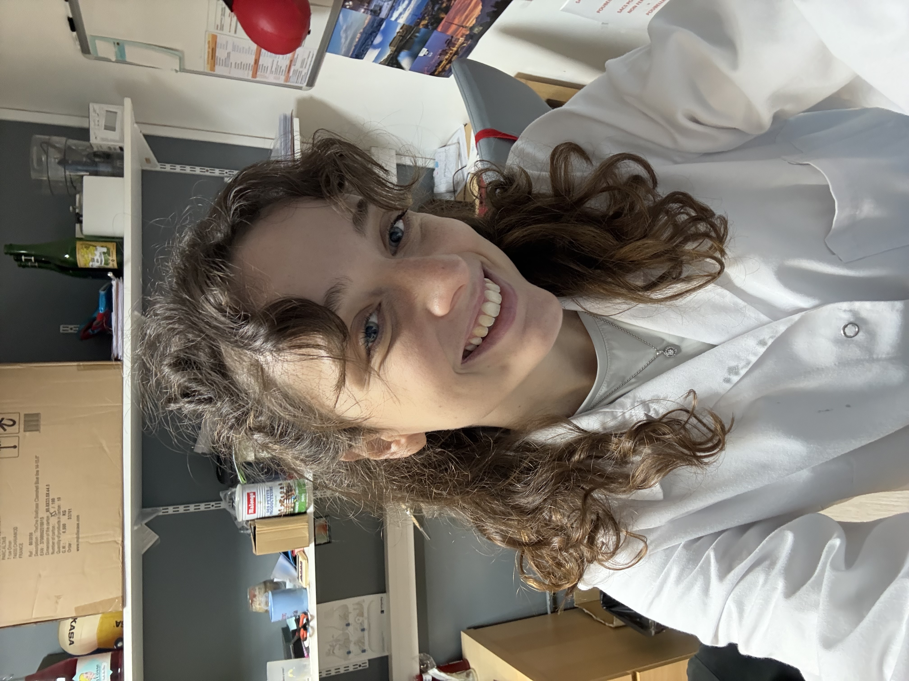

PhD Student in Neuroendocrinology · University of Lille
Eiffel Excellence Scholar (2025–2028)

I am a PhD student in Neuroendocrinology at the University of Lille, working under the supervision of Dr. Konstantina Chachlaki.
My academic background bridges cognitive science, artificial intelligence, and computational neuroscience. My PhD focuses on the interaction between neuroinflammatory and neuroendocrine processes following preterm birth in a preclinical context, and how computational models can help disentangle these mechanisms.
Below I summarize the core coursework completed during my BSc, MSc, and PhD training, together with the concrete analytical, computational, and experimental skills acquired at each stage.
| Degree | Main Courses | Skills Acquired | Tools & Methods |
|---|---|---|---|
|
BSc Cognitive Science & AI Tilburg University |
Advanced Python Programming Machine Learning Deep Learning Computer Vision Cognitive Neuroscience |
• Writing structured, modular Python code • Data preprocessing, normalization, and feature extraction • (Un)Supervised learning (classification, regression, clustering, dimensionality reduction, autoencoders / VAE) • Basic and advanced neural network architectures (e.g., perceptrons, CNNs, RNNs, transformers) • EEG signal collections and analysis (pre-processing, time, frequency and connectivity analysis) • Classroom management, planning and practicals preparation |
Python, NumPy, Pandas Scikit‑learn MNE‑Python Git & version control Canvas |
|
MSc (Research) Brain & Cognitive Sciences University of Amsterdam |
Computational Cognitive Neuroscience Foundations & Advanced of Neural & Cognitive Modelling Neuroimaging (BOLD MRI) Self‑Supervised Learning (Literature Thesis) Teaching |
• Building and evaluating computational models of neural processes • Statistical inference on neural data • fMRI data analysis with Python (Ni-edu) • Designing and evluating analysis pipelines for high‑dimensional data • Critical comparison of machine learning architectures • Graph‑based representations of neural signals • Classroom management, planning and exam correction |
PyTorch SciPy / Pandas Matplotlib / Seaborn Graph‑based ML methods Canvas |
|
PhD Neuroendocrinology University of Lille |
Neuroendocrinology Inflammation & Development Animal Experimentation & Surgery Molecular & Omics Approaches |
• Experimental design in mouse models of neuroinflammation and development (breeding, genotyping, administration of pharmacological treatments) • Collection and processing of proteomics data using Olink proximity extension assays • Quality control, normalization, and statistical analysis of high‑dimensional proteomics datasets • Single‑cell RNA‑seq experimental workflows (tissue dissociation, cell isolation, sequencing design) • Single‑cell RNA‑seq data preprocessing, clustering, and cell‑type annotation • Integration of omics, molecular, and behavioral data • Translational interpretation of molecular findings in neuroendocrine context • Scientific writing, project planning, and data documentation |
Mouse models Olink proteomics platforms Single‑cell RNA‑seq pipelines Python‑based analysis workflows |
My academic trajectory is structured around clearly defined objectives at each stage, supported by concrete actions that translate these goals into measurable progress.
| Stage | Career Goals | Action Plan |
|---|---|---|
|
PhD (2025–2028) |
• Publish at least one first-author paper in a high-impact journal • Present research at an international conference • Obtain competitive postdoctoral funding (e.g., Marie Curie) |
• Develop rigorous experimental and computational pipelines to produce publishable results • Target journals aligned with interdisciplinary neuroscience and AI • Actively submit abstracts to major international conferences • Build a strong academic network through collaborations and conference participation • Prepare early for postdoctoral funding applications (identify host labs, draft proposals) |
| Postdoctoral Researcher |
• Develop independence in designing and leading research projects • Supervise MSc and BSc students regularly • Apply for professorship positions |
• Lead research projects from conception to publication • Develop original research directions and grant proposals • Take active roles in student supervision and mentoring • Build a consistent publication record as senior/lead author • Apply to academic positions and expand professional network |
| Professorship |
• Lead an interdisciplinary research group • Integrate neuroscience and computational modeling • Combine research, teaching, and mentorship |
• Establish a coherent research program and secure funding • Supervise PhD, MSc, and BSc students • Teach and design courses in neuroscience and computational methods • Build collaborations across disciplines and institutions |
Download my CV here.
Email: ilaria.gavetti@gmail.com
LinkedIn: linkedin.com/in/ilariagavetti